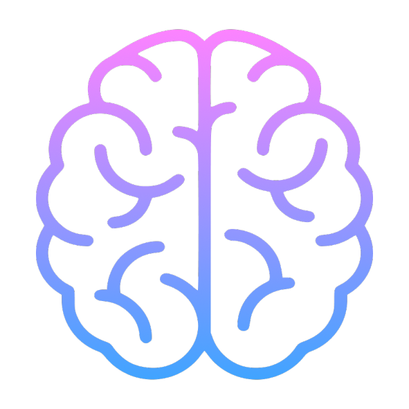
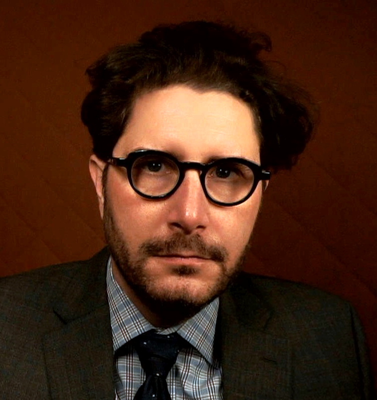
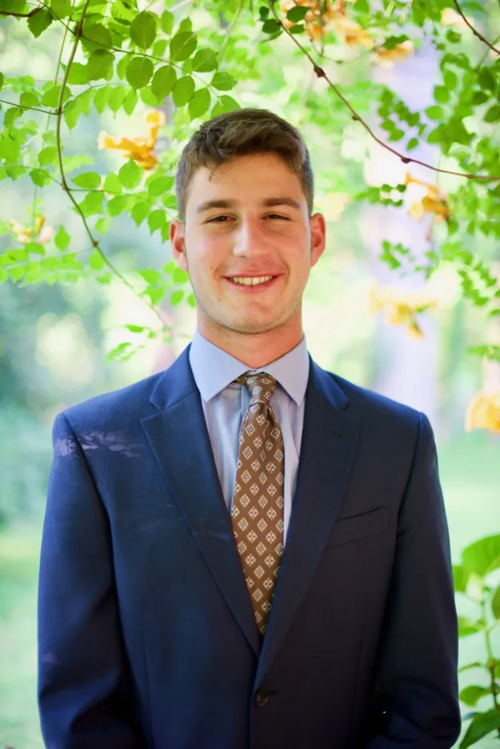
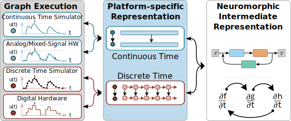

The Unseen Cost of AI: Why Neuromorphic Hardware is the
Future
A Proposal for Fiscal Sponsorship with the Open Source
Hardware Foundation
Presented by: The Open Neuromorphic
Executive Committee
Date: August 12, 2025

+

Who We Are
The Open Neuromorphic Executive Committee

Justin Riddiough
Vice-Chair

Danny Rosen
Secretary
The world's largest neuromorphic computing community
2,282
Discord Members
57% actively seeking to get involved in projects
2,239
LinkedIn Followers
23% Engineering, 18% Research, 15% Education
1,830
YouTube Subscribers
Growing educational content library
74%
Learning-Focused
Of Discord members actively seeking education
Community Engagement: Our members
span from students to industry leaders, with 66%
interested in machine learning applications and 48%
identifying as researchers. This diverse, engaged
community represents the future workforce for
neuromorphic computing.
The Core Problem: AI's Unsustainable Appetite for Power
Artificial intelligence is driving unprecedented demand
for energy, with significant environmental and economic
consequences.
-
Massive Energy Consumption: Data
centers currently account for 2% of total U.S.
energy use, a figure projected to skyrocket with AI
adoption. By 2030, data centers could consume over
20% of global energy.
-
Growing Infrastructure Demand: This
surge necessitates the construction of new power
plants, often leading to relaxed environmental
regulations and increased resource extraction to
meet the demand.
-
Environmental Impact: Creating a
single AI image can use the same amount of energy as
fully charging a smartphone. At scale, this
contributes significantly to global emissions.
The trajectory is clear: The current path of AI
development is unsustainable.
Nature's Blueprint for Efficiency
Nature offers a vast library of ultra-efficient
computational blueprints. Bio-inspired computing is
about learning from these proven designs, not just
mimicking a single brain.
-
A Powerful Example: The human brain
runs on just 20 watts, yet it outperforms AI that
requires a 9-megawatt power station—an efficiency
gap of over 200,000 times.
-
Beyond One Model: The neuromorphic
and bio-inspired communities draw inspiration from a
wide array of biological, physical, and chemical
processes.
-
A Shared Goal: By embracing this
diversity, we can explore a richer set of solutions
for creating powerful, low-energy computation.
Open Neuromorphic serves as the meeting point
for this entire bio-inspired ecosystem,
fostering collaboration between computational
neuroscience and hardware engineering.
Unlocking Hardware Potential with Open Standards
A diverse landscape of innovative neuromorphic hardware
exists, but it is fragmented. Each chip speaks its own
"language," hindering collaboration and progress.
Open standards are the solution.
Open Neuromorphic is championing shared
infrastructure to prevent vendor lock-in and ensure
interoperability.
The Neuromorphic Intermediate Representation

The Neuromorphic Intermediate Representation
-
Supported by 14+ platforms, 5 hardware
- 400'000+ downloads
- 50+ citations
- 30+ contributors
Other initiatives
- Talks and workshops
-
Peer-review for open-source contributions
- Open-source book
-
Promoting and cataloguing initiatives
-
Developer tutorials and meetings
Enabling a healthy ecosystem
By promoting standards like NIR, we are building the
essential "connective tissue" for a robust and
sustainable open hardware ecosystem, directly aligning
with OSHF's core mission.
We are not just supporting hardware; we are building
the open framework that makes it usable and scalable
for everyone.
The Collaboration Network: Diverse & United
To actively combat fragmentation, we established the
Open Neuromorphic Collaboration Network, uniting the field's most critical open-source
projects. This is a concrete demonstration of our
community-building efforts.
Our Foundational Supporters Include:
AEStream
BindsNET
Brian
Faery
GeNN
NIR
snnTorch
Sottosoglia
This network embodies our philosophy: by working
together and promoting each other's work, we elevate the
entire field, creating a virtuous cycle of discovery and
growth.
Why OSHF? A Partnership Rooted in Shared Values
Why This Partnership is Crucial:
Our community provides the vision and the people;
fiscal sponsorship through OSHF provides the
stability and resources to turn that vision into a
lasting reality.
Why OSHF is the Perfect Partner:
-
Shared Mission: A deep
philosophical alignment on the principles of open
hardware, accessibility, and community-driven
science.
-
A Bridge Between Communities: Our
leadership team, including Vice-Chair Justin
Riddiough, is deeply connected to the broader
open-science and climate action movements as a
trusted ally. This perspective ensures our mission
isn't just technical; it's about building a globally
inclusive and sustainable ecosystem.
-
Credibility & Trust: A partnership
with OSHF validates our commitment to genuine open
practices and strengthens our position within the
broader open-science movement.
Thank You & Discussion
Let's build a sustainable, open future for AI, together.
We are incredibly excited about the potential of a
partnership with the Open Source Hardware Foundation and
are here to answer any questions you may have.